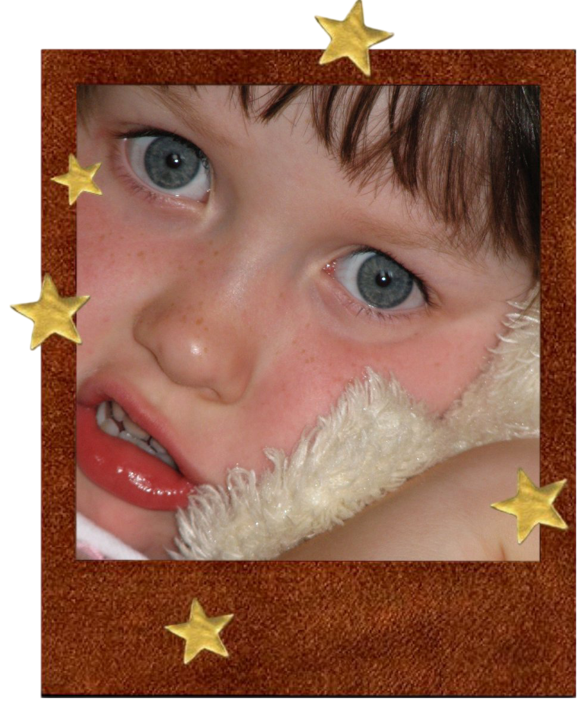
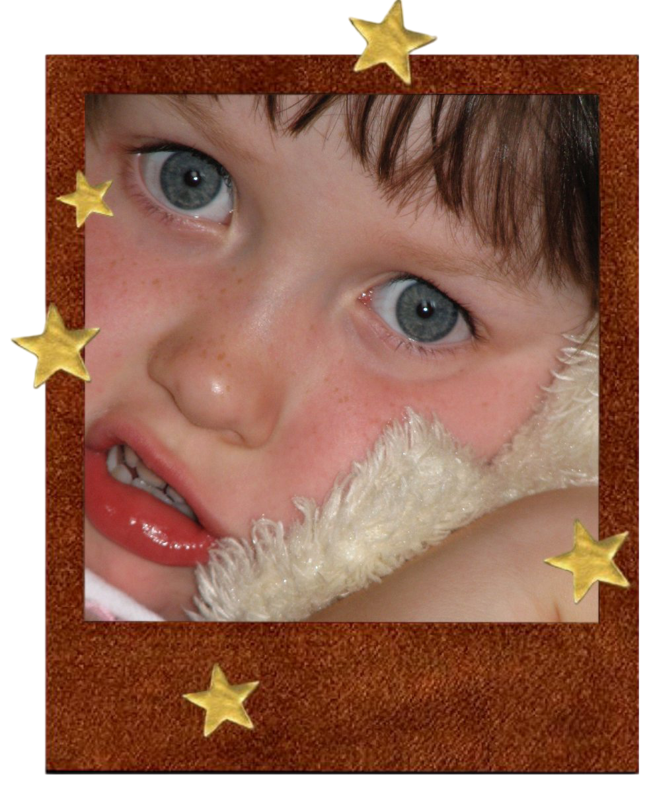

hellooooo my star people! its me! mefrom5to7!!
im so happy u came to join me on my journey through the stars. please make yourself at home. i wish i could give u some tea and a hug through the compooper but thats just how it goes with the world wide web.
i guess i should give some context?? im not sure what people write on home pages. but maybe it is just a home.. our home! i guess i can explain why i made this place. i just rlly hate instagram (!!!) and other social media, i mean dont get me wrong i love them but i hate that i love them. the world wide web used to be such a free place and now it is overrun by ppl trying to collect me for ad revenue and other ppl playing the who is cooler game. the only way to get my life back was to leave. and so i did! and yes before u ask i coded this puppy from scratch cause im the coolest mf evr born. also i am not sure how long this blog will last, as i tend to get bored of things fast but for now:
VIVA LA MEFROM5TO7!!!!!!!
 
